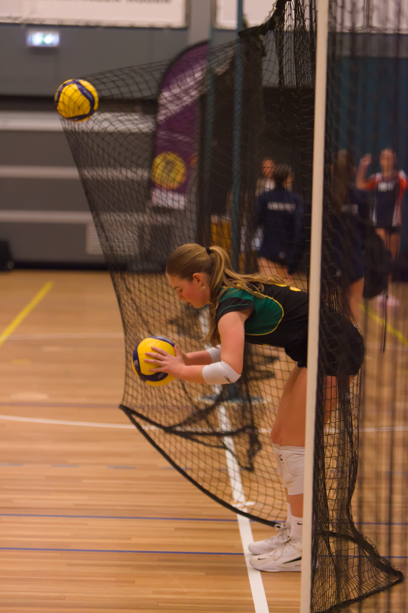
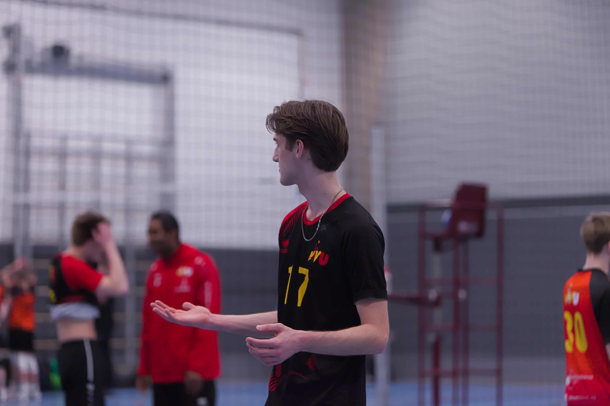
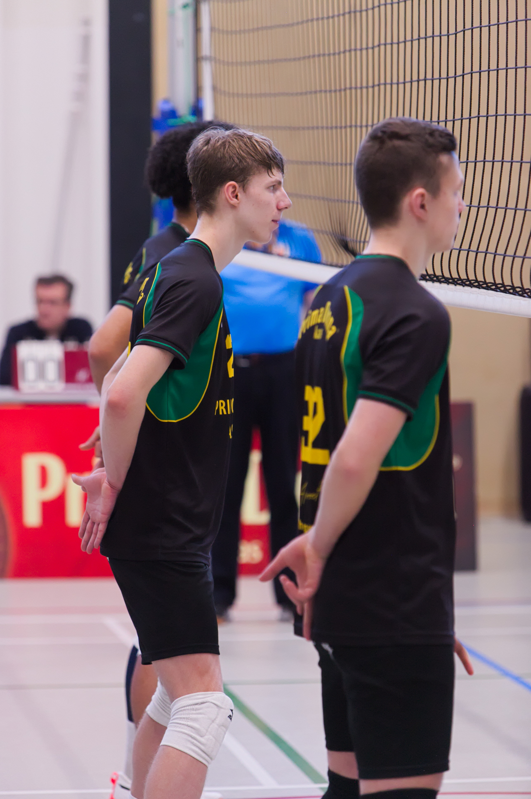
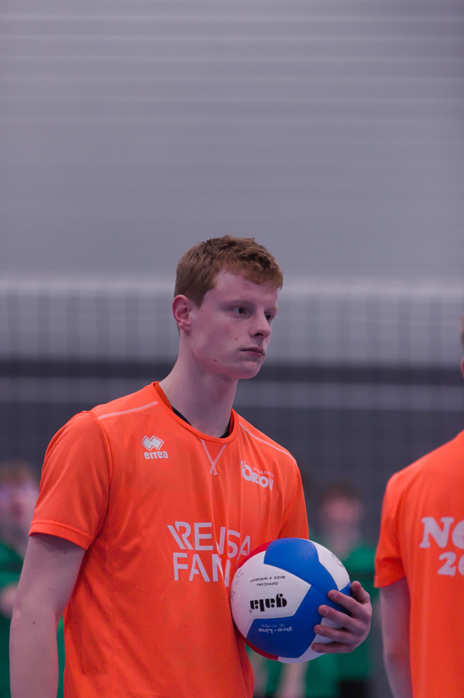
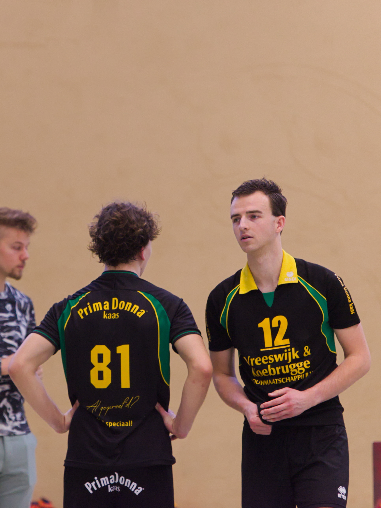
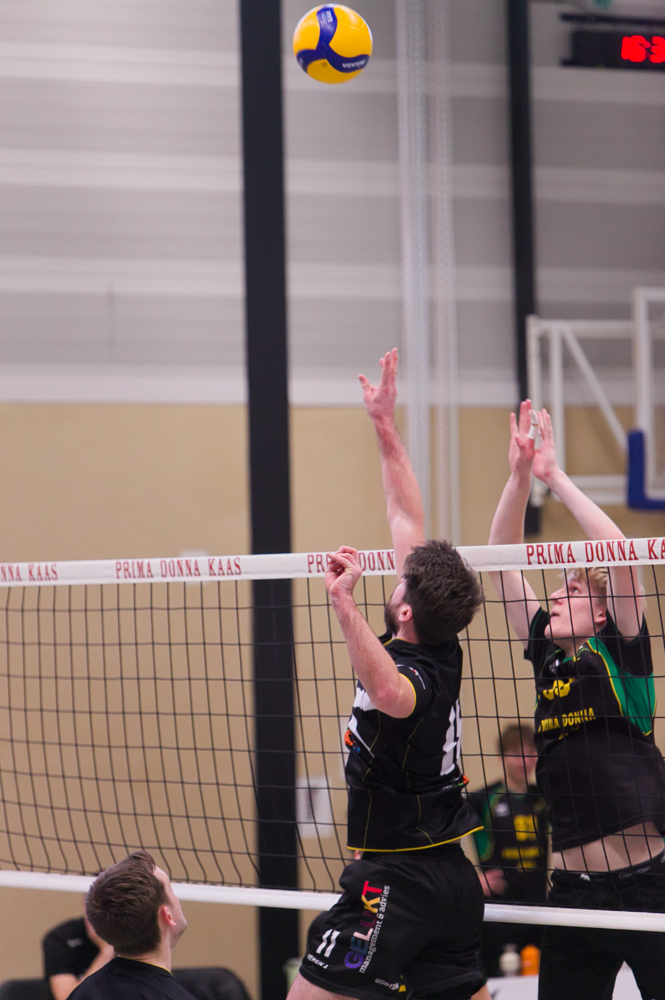
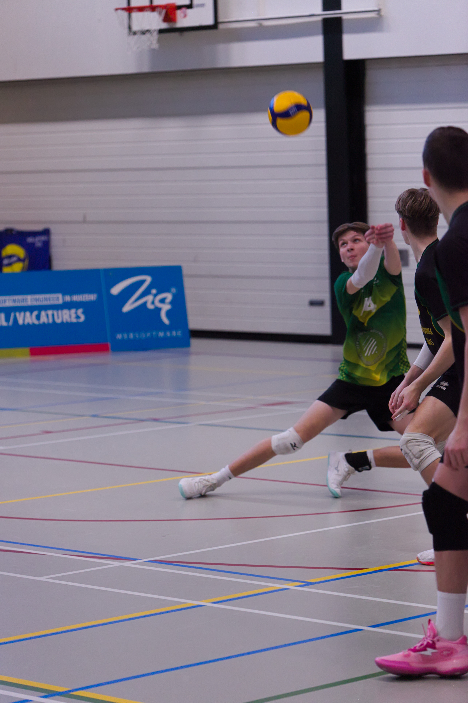
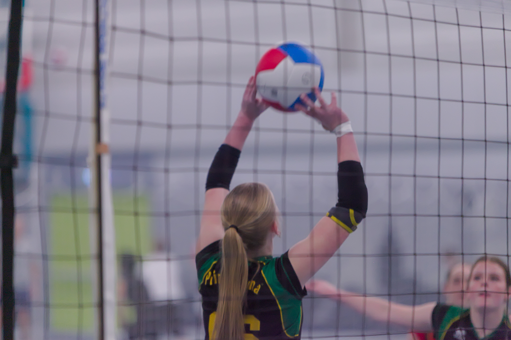
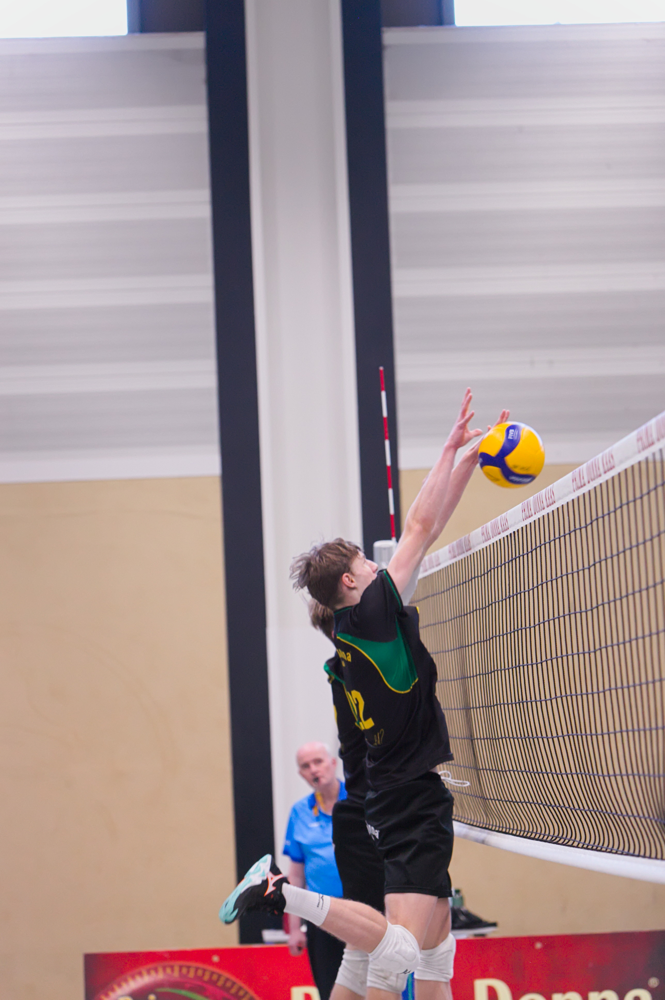
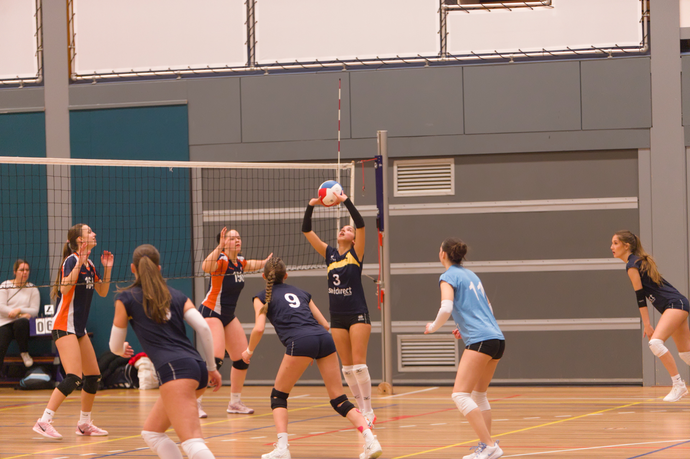

Sportfotografie
Sportfotografie legt niet alleen actie vast, maar ook emotie, teamwork en passie. Voor teams is het een geweldige manier om herinneringen vast te leggen en de energie van wedstrijden en trainingen te delen met supporters, familie en sponsors.
Goede foto's kunnen de sfeer van een wedstrijd opnieuw laten beleven en laten zien hoe sterk een team samenwerkt.
Wil jou nou ook foto's van jou wedstrijden?
Neem Contact op met ons!Albums
Al onze gemaakte foto's zullen hier woorden geupload en zullen op onze site kunnen worden gedownload. Hiervoor is het maken van een account wel nodig.
De foto's worden ingedeeld in albums van het toernooi of de wedstrijd waar jou team in speelde. Op deze manier kun je de foto's makkelijk vinden!
Zoek je een album van jouw wedstrijd?
Klik hier voor de albums!